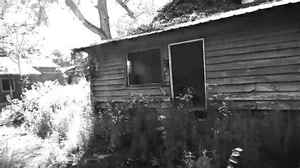

ВНИМАНИЕ: Обнаружена попытка доступа к дестабилизированному сектору.
[ОШИБКА]: НЕВЕРНЫЙ КЛЮЧ ШИФРОВАНИЯ.
[ХАРАКТЕРИСТИКА]: Пограничный мост между Лиминалями и Фракталами, дехромизация, распад геометрии.
[АРХИВ НЗФА]: ЗАСЕКРЕЧЕНО
Описание: Аномальный переходный кластер, связывающий стабильные лиминальные пространства с фрактальными безднами. По мере продвижения вглубь комплекса реальность утрачивает цвет (Phen_0010) и расслаивается на геометрические узоры:

Слой 0 (Zero): Поле с деревянной избой под серым небом. Максимально стабилен, однако трава и мелкие детали уже начинают повторять фрактальные паттерны.
Слой 1–2 (One / Two): Искажённые особняки и заснеженные аллеи под поглощающим чёрным небом. Начинается активное вымывание пигмента и плавление углов комнат.
Слой 3–4 и L0ST H0P3: Полный коллапс каркаса. Стены превращаются в текучий серый пепел, материя распадается на крупные полигоны.
2F4R (Точка Сдвига): Абсолютная фрактальная геометрия без верха, низа и гравитации. Единственный выход ведёт напрямую в «Небытие» (Фрактал 998) или «Реквием» (999).
Советы: Потеря цвета одежды и кожи — первый признак проникновения. Не пытайтесь вернуться назад после пересечения Слоя 1.
< ЭКСТРЕННЫЙ ВЫХОД В ТЕРМИНАЛ